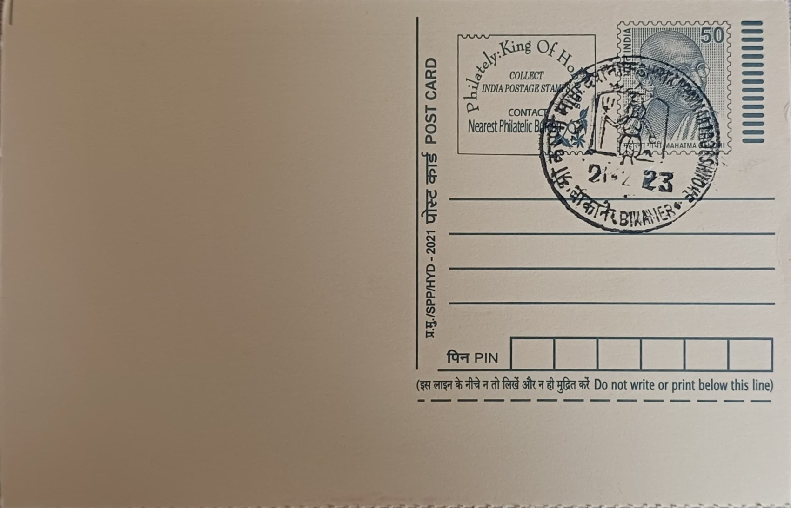

Shri Karni Mata
श्री करणी माता


Karni Mata (1387-1538) was born in the Charan community near Phalodi in present-day Rajasthan and came to be regarded in her own lifetime as an incarnation of the goddess Durga. She lived largely as an ascetic and is venerated today as the kuldevi, or clan deity, of the Rathore ruling houses of both Bikaner and Jodhpur. According to tradition, she blessed Rao Bika, founder of Bikaner, in 1485 and reportedly laid the foundation stone of Bikaner Fort at his request, while in 1453 she is said to have blessed Rao Jodha of Jodhpur before his campaigns to win Ajmer, Merta and Mandor, tying her figure directly to the founding of both princely states.
The temple at Deshnoke, roughly 30 kilometres south of Bikaner, is one of the most distinctive pilgrimage sites in India, combining dynastic veneration with an unusual form of animal worship. It functions as the principal shrine to Karni Mata and draws pilgrims from across Rajasthan as well as foreign visitors curious about its central feature: thousands of black rats, known locally as kabbas, that are fed and protected within the temple precincts as sacred beings. Popular belief holds that these rats are the reincarnated souls of Karni Mata's male descendants and followers from the Charan clan, and the shrine's informal name, the Rat Temple, has become its most recognised identity internationally even though its formal religious standing rests on its status as a kuldevi shrine of the Bikaner royal house.
The present marble structure replaced an older, smaller shrine and was largely built up through the early twentieth century under the patronage of Maharaja Ganga Singh of Bikaner, who is credited with commissioning its heavy solid-silver entrance doors and much of the carved marble facade, which blends Rajput and Mughal-influenced decorative motifs. The inner sanctum, housing the image of Karni Mata, is considerably older than the surrounding marble additions and is generally dated to the fifteenth century, reflecting the temple's long continuous use as a site of worship. The rat population inside, estimated at around 20,000 to 25,000, is sustained on grain, milk and sweets offered daily by devotees and resident priests, who regard food already nibbled by the rats as sanctified prasad to be eaten rather than discarded.
A central element of devotion at the temple is the search for a white rat among the overwhelmingly dark-coloured population; spotting one is considered a rare and highly auspicious sign, said to fulfil the wishes of the devotee who sees it. The underlying legend explaining the rats traces back to Karni Mata's grief over the death of her stepson, Laxman, who drowned while attempting to drink from a pond; when she petitioned Yama, the god of death, to restore him, he is said to have relented by reincarnating Laxman and the men of the Charan clan associated with her as rats rather than returning them to human form outright, establishing the practice by which her male kin and followers are believed to be reborn into the temple's rodent population rather than undergo conventional rebirth.
The temple remains an active site of Hindu worship administered through its own trust under the patronage lineage connected to the former Bikaner royal family, and it continues to draw a steady stream of pilgrims particularly during the Navratri festivals, when large fairs are held at Deshnoke in the goddess's honour. Visitors are required to remove footwear before entering and walk barefoot among the rats as a mark of respect, a practice that has made the temple a frequently documented subject in travel writing and wildlife-and-culture reporting worldwide. Its continued function as both a living royal shrine and an open attraction for outside visitors has kept Deshnoke on the itinerary of travellers passing through the Bikaner region specifically to witness this singular coexistence of religious devotion and protected rodent life.
| Date of Introduction | February 21, 2004 |
|---|---|
| Address | Sub Postmaster, |
| Deshnoke SO, | |
| Bikaner (dt.), Rajasthan - 334801. |